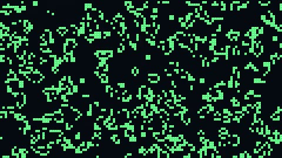

HomeAccueil / ExamplesExemples
Game of lifeJeu de la vie
Conway's automaton on a grid of 4 pixels per cell; buffer A reads its eight neighbours and updates every 6 frames.Automate de Conway sur une grille de 4 pixels par cellule ; le tampon A lit ses huit voisines et se met à jour tous les 6 images.

CategoryCatégorie: Multiple passesPasses multiples - jeu_de_la_vie.glsl - 14 lineslignes - File on GitHubFichier sur GitHub
In the program: Examples, choose it, Add to the list. Or copy the code into a file next to the program and drop it on the window.Dans le programme : Exemples, choisissez-le, Ajouter à la liste. Ou copiez le code dans un fichier et glissez-le sur la fenêtre.
This example uses several passes: the files below go together.Cet exemple utilise plusieurs passes : les fichiers ci-dessous vont ensemble.
CodeCode
jeu_de_la_vie.glsl
// SPDX-License-Identifier: GPL-3.0-or-later
// Copyright (C) 2026 Patrick JAILLET
// fr: Jeu de la vie — Automate de Conway sur une grille de 4 pixels par cellule ; le tampon A lit ses huit voisines et se met à jour tous les 6 images.
// en: Game of life — Conway's automaton on a grid of 4 pixels per cell; buffer A reads its eight neighbours and updates every 6 frames.
// iChannel0=bufferA
void mainImage(out vec4 fragColor, in vec2 fragCoord) {
float a = texelFetch(iChannel0, ivec2(fragCoord / 4.0), 0).r;
vec3 col = mix(vec3(0.03, 0.04, 0.08), vec3(0.4, 1.0, 0.6), a);
col *= 0.85 + 0.15 * step(0.5, fract(fragCoord.x / 4.0)) * step(0.5, fract(fragCoord.y / 4.0));
fragColor = vec4(col, 1.0);
}jeu_de_la_vie.bufferA.glsl
// SPDX-License-Identifier: GPL-3.0-or-later
// Copyright (C) 2026 Patrick JAILLET
// iChannel0=bufferA
float h(vec2 p) { return fract(sin(dot(p, vec2(12.9898, 78.233))) * 43758.5453); }
void mainImage(out vec4 fragColor, in vec2 fragCoord) {
ivec2 p = ivec2(fragCoord);
if (iFrame < 2) { fragColor = vec4(step(0.72, h(fragCoord)), 0.0, 0.0, 1.0); return; }
float self = texelFetch(iChannel0, p, 0).r;
if (iFrame % 6 != 0) { fragColor = vec4(self, 0.0, 0.0, 1.0); return; }
ivec2 sz = ivec2(iResolution.xy / 4.0);
if (p.x >= sz.x || p.y >= sz.y) { fragColor = vec4(0.0, 0.0, 0.0, 1.0); return; }
float n = 0.0;
for (int j = -1; j <= 1; j++)
for (int i = -1; i <= 1; i++)
if (i != 0 || j != 0) n += texelFetch(iChannel0, (p + ivec2(i, j) + sz) % sz, 0).r;
float alive = (self > 0.5) ? (n == 2.0 || n == 3.0 ? 1.0 : 0.0) : (n == 3.0 ? 1.0 : 0.0);
if (iFrame % 300 == 0) alive = max(alive, step(0.9, h(fragCoord + float(iFrame))));
fragColor = vec4(alive, 0.0, 0.0, 1.0);
}